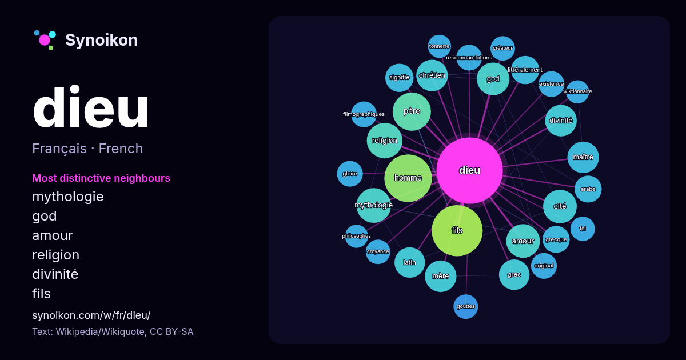

Français · mot populaire
dieu
“god” · Les mots trouvés autour de lui dans 1233 occurrences issues de Wikipédia, Wikiquote.

Voisins les plus spécifiques
- mythologie 17×
- god 17×
- amour 16×
- religion 15×
- divinité 15×
- fils 14×
- chrétien 13×
- cité 12×
- homme 12×
- littéralement 12×
- grec 12×
- filmographiques 11×
- maître 11×
- latin 11×
- recommandations 11×
- grecque 10×
- gloire 10×
- existence 10×
- gouttes 9.9×
- signifie 9.8×
× = combien de fois plus souvent que dans le texte général de Wikipédia.
Voisins les plus fréquents
- fils 39
- homme 34
- nom 30
- film 25
- père 22
- religion 19
- mythologie 18
- amour 17
- cité 17
- mort 17
- god 16
- chrétien 15
- divinité 15
- maître 15
- mère 15
- grec 14
- latin 14
- œuvre 13
- série 13
- également 12
En contexte
- homonymes, voir Dieu (homonymie) et Divin (homonymie). Cet article traite de « Dieu » (nom propre, avec une majuscule). Pour le concept de « dieu » (nom commun) Wikipedia snippets · Dieu
- (comment ?) selon les recommandations des projets correspondants. Mon Dieu Mon Dieu est une chanson d'Édith Piaf datant de 1960. Les paroles sont de Michel Wikipedia snippets · Mon Dieu
- des analyses faites par des sources secondaires. Dieu le Père est la première des trois personnes du Dieu trinitaire selon la théologie chrétienne : Père Wikipedia snippets · Dieu le Père
- noms de Notre-Seigneur, Fils de Dieu, le Messie ou le Sauveur. Pour le christianisme, il est le Messie, le Fils de Dieu et le rédempteur du genre humain Wikipedia snippets · Jésus-Christ
- homonymes, voir La Cité de Dieu (homonymie). La Cité de Dieu La Cité de Dieu (en latin De civitate Dei contra paganos : La Cité de Dieu contre les païens) est Wikipedia snippets · La Cité de Dieu
- Apollo), ou Phébus (ou Phœbus), est, dans la religion grecque antique, le dieu des arts (dont le chant, la musique et la poésie), de la beauté masculine Wikipedia snippets · Apollon
- ADD. Les Assemblées de Dieu (ADD) (anglais : Assemblies of God), officiellement l’Association mondiale des Assemblées de Dieu (anglais : World Assemblies Wikipedia snippets · Assemblées de Dieu
- Son nom est identique au mot « dieu » utilisé dans beaucoup de langues sémitiques . Il est considéré comme le chef de dieux du panthéon cananéen. En Mésopotamie Wikipedia snippets · El (dieu)
Autres mots
- art
- automne
- carte
- chanson
- chat
- chemin
- cheval
- chien
- climat
- cloche
- cœur
- désert
- eau
- famille
- forêt
- histoire
- hiver
- horloge
- jardin
- langue
- miel
- miroir
- monnaie
- montagne
- mort
- mère
- nature
- nourriture
- ombre
- pain
- pluie
- pont
- pouvoir
- printemps
- santé
- science
- sel
- silence
- temps
- tempête
- thé
- train
- travail
- trésor
- vie
- ville
- vérité
- étoile
- île
Précalculé le 2026-10-09 avec les paramètres par défaut (±5 mots, corpus moyen). La carte interactive peut l’actualiser avec des données en direct.
Interface traduite automatiquement ; corrections bienvenues.